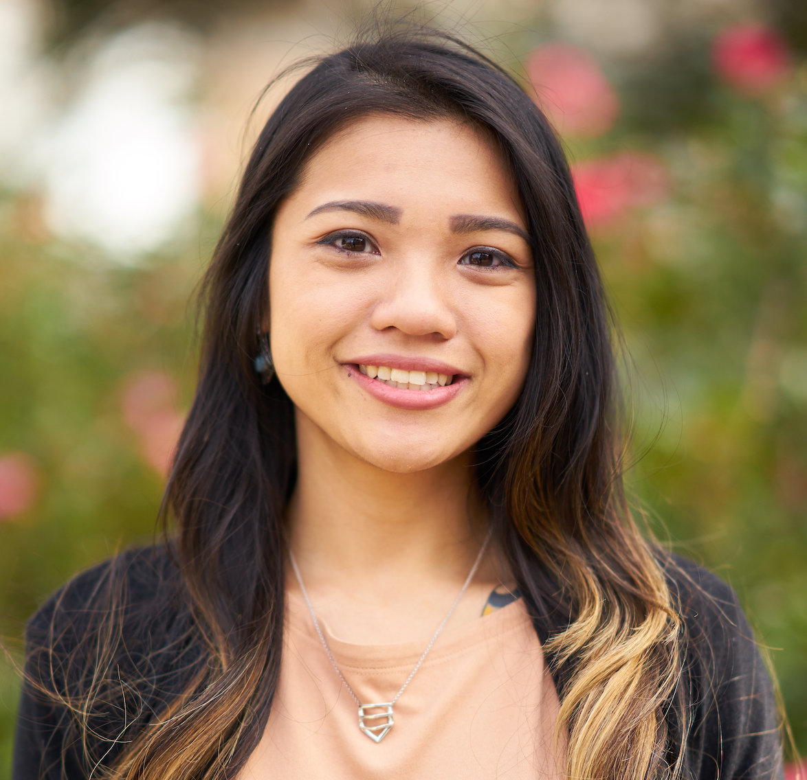

About Me
Lynn Tang, a UT graduate student in history, was born in Austin Texas in 1990.
She continues her education in coding at the UT Coding Bootcamp to secure her family's future. Her spark of motivation was re-kindled after witnessing her brother's achievements in the Computer Science field.
She hopes to form new habits and accept responsibility for her failures until she reaches her goal of working at a place that would be more stable.
Luckily, she has found many support from her good friends who are just as excited for her to discuss programming languages and jobs that could make a difference in her life.
Outside of her studies, she enjoys spending time with her dog, Moxxi, reading books, drinking wine, cooking, going to rave festivals, and having deep meaningful conversations with her close ones.